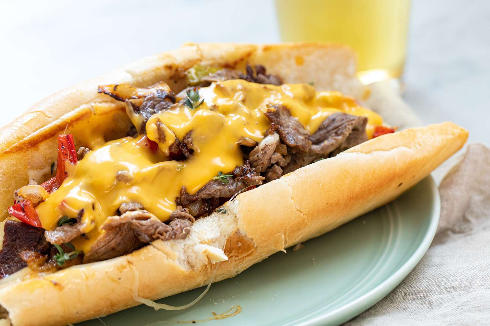

Philly Cheesesteak Sandwich

Description
The Philadelphian icon known as the Philly Cheesesteak Sandwich is an extremely popular sandwich consisting of thinly sliced pieces of steak and tender, melting cheese in a long and crusty hoagie roll. It was invented in the 1930s in what is now a Philadelphian institution called Pat's King of Steaks.
Ingredients
- 1 lb Ribeye steak, trimmed and thinly sliced
- 1/2 tsp Sea salt, or to taste
- 1/2 tsp Black pepper, or to taste
- 1 sweet onion, (large), diced
- 8 slices provolone cheese, mild (not aged provolone)
- 4 Hoagie Rolls, sliced 3/4 through
- 2 Tbsp unsalted butter, softened
- 1 garlic clove, pressed
- 2-4 Tbsp mayonnaise, or to taste
Steps
- Slice hoagie rolls 3/4 of the way through with a serrated knife. Dice onions and thinly slice beef.
- In a small bowl, stir together 2 Tbsp softened butter with 1 pressed garlic clove. Spread garlic butter onto the cut sides of 4 hoagie roll. Toast the buns on a large skillet, flat cooktop or griddle on medium heat until golden brown then set aside.
- Add 1 Tbsp oil to your pan/cooktop and sautee diced onions until caramelized then transfer to a bowl.
- Increase to high heat and add 1 Tbsp oil. Spread the super thinly sliced steak in an even layer. Let brown for a couple of minutes undisturbed then flip and season with 1/2 tsp salt and 1/2 tsp black pepper. Sautee until steak is fully cooked through then stir in the caramelized onions.
- Divide into 4 even portions and top each with 2 slices of cheese and turn off the heat so the cheese will melt without overcooking the meat.
- Spread a thin layer of mayo on the toasted side of each roll. Working with one portion at a time, place a toasted bun over each portion and use a spatula to scrape the cheesy beef into your bun as you flip it over. Serve warm.
Source
This recipe was taken from this website.